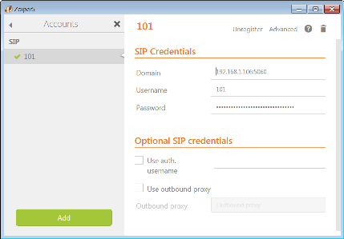
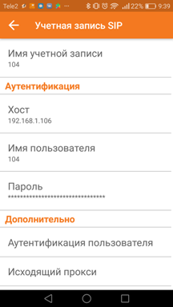

Asterisk 1 6 Как работает Dial plan
LearningIT
*IMPORTANT: This is a softphone application and not a VoIP service. A SIP server or subscription with a SIP-based VoIP provider is required to make calls.*
http://www.sip-line.ru/connection/x-lite
Поддержка одного SIP аккаунта
Отсутствие (в бесплатной версии) кодека G.729
Отсутствие (в бесплатной версии) шифрования (TLS/SRTP)
Для этого достаточно установить на компьютер один из стандартных программных телефонов или купить любой SIP телефон (или VoIP шлюз для обычного телефона) и общаться через Интернет без компьютера. Для организации распределенных сетей или корпоративной связи, а также при необходимости интеграции общения через Интернет в существующую офисную связь, можно приобрести виртуальную IP-АТС.
GNU nano 2.0.9
File: /etc/asterisk/extensions.conf
[outcoling]
exten -> _XXXX,1,Dial(SIP/${EXTEN},,m)
если в x-lite набрали 4 цифры
Dial(
совершит звонок
(SIP/
по протоколу
/${EXTEN}
по номеру, который мы набрали
/etc/asterisk/sip.conf [1001] type=friend regexten=101 secret=1234 context=outcoling host=dynamic callerid="1001" disallow=all allow=alaw allow=ulaw language=ru callgroup=1 pickupgroup=1 qualify=yes canreinvite=yes call-limit=4 nat=no
Asterisk 1 5 Настройка Extensions conf и демонстрация работы телефонов
putty,ssh,root,he
nano /etc/asterisk/extensions.conf
FreePBX. Первые шаги: Настройка SIP и создание внутреннего номера
http://192.168.0.115/admin/config.php?display=advancedsettings
| FreePBX Advanced Settings | ||
| Show Language setting | Да | |
| SIP Channel Driver | chan_sip | |
|
Настройки/Установки Asterisk для SIP |
||
| Разрешить входящие анонимные SIP звонки | Нет | |
| Настройки NAT | ||
| Внешний адрес | 78.41.102.78 | |
| Локальные сети | 192.168.10.0/24 | |
| Разрешить SIP вызовы без аутентификации | Нет | |
| Установки канала SIP | ||
| Порт | 5060 (5160) | |
| Приложения | Внутренние номера | |
| Добавить SIP внутренний номер | ||
| Внутренний номер пользователя | 101 | |
| Отображаемое имя | Tester | |
| Голосовая почта | ||
| Включено | Нет | |
| Расширенный | Добавить внутренний номер | |
| Разрешить | 192.168.1.0/255.255.255.0 | |
| Ожидание звонка | Выключить | |
| Контроль внешних входящих соединений | Да | |
| Контроль внешних исходящих соединений | Да | |
| Контроль внутренних входящих соединений | Да | |
| Контроль внутренних исходящих соединений | Да | |
| Запись разговоров | Включить | |
| 102 | 12b5b52a8f25f18db43c3a26f39056cf | |
| 104 | 5a1cbf8aedf41f08f7443fe9575e83de | |
| House | ||
| 101 | 033d19cf7a9f9071d2c326aa3d0011a4 | |
| 102 | 3773c4e2b013fc2782fcb57a433b7bc2 | |
| 103 | af69e60f95bb75a06ae4e1a2a98f374f | |
# /etc/init.d/asterisk restart
User Manager users '101,102,103,104' have the ability to receive faxes but have no email address defined so they will not be able to receive faxes over email,
Администратор/User Managment/ред../Факс
http://192.168.1.106/admin/config.php?display=userman&action=showuser&user=1&directory=1
zoiper
https://www.zoiper.com/en/voip-softphone/download/current
C:\Program Files (x86)\Zoiper5
Zoiper5
Create Account
101
101@192.168.1.106:5060
 *43
Sipnetic IPTON
несколько учетных записей
Которые активны все время
Ввести адрес сервера вручную
192.168.1.106
Проверка конфигурации
Параметры учетной записи
106
20..
chan_sip - old
chan_pjsip - new
x-lite
#1\a\a.T;match=1;prestrip=2;
2007. Gizmo Call - VoIP клиент в браузере
Максим Неустроев
Asterisk | Часть 1 - 1. Краткие теоретические сведения
машина с линукс
requeires an x86-64
C:\Users\freon\Virtual Machines
Windows 7: как установить и настроить Microsoft Virtual PC:
C:\Users\freon\Virtual Machines
Пуск\Windows Virtual PC
Создать виртуальную машину
| Имя: | pbx |
| Расположение: | D:\programs\VmWin |
| Укажите параметры памяти и сети | |
| озу | 1024 |
| Сеть | Использовать сетевфе подключения компьютера |
| создать виртуальный диск | фиксированного размера |
| 16384 | |
FreePBX Distro: установка и настройка с нуля
1.9 Gb
w10 hyper
docs.microsoft.com
Пуск/rb
Windows PowerShell (администаратор)
Enable-WindowsOptionalFeature -Online -FeatureName Microsoft-Hyper-V -All
Панель управления\Программы\Программы и компоненты
Включение или отключение компонеттов Windows
Создание первой виртуальной машины
Пуск/поиск/H
Быстрое создание Hyper-V
Ubuntu 19.04
Средства администирования
Диспетчер Hyper-V
Средства администирования
Окно - Диспетчер Hyper-V
Действия - Диспетчер Hyper-V
Подключиться к серв...
Выбор компьютера
Локальный компьютер
Дейсвия
Быстро создать...
Создать
Виртуальная машина
Приступая к работе/Далее
Новая виртуальная машина
Укажите местонахождение
Укажите поколение
Выделите память
Настройка сети
Подключите виртуальный жесткий диск
Параметры установки
Сводка
Переход с Windows 10 Home Edition на Windows 10 Pro путем открытия обновления параметров > и активации системы безопасности > ****.
FreePBX Distro: установка и настройка с нуля
psw:20.70
| Username | admin | |
| Password | 20.70 | |
| Confirm Password | ||
| Notifications Email address | mlapin@rambler.ru | |
| System Identifier | VoIP Server | |
| Automatic Module Updates | Disabled | |
| Automatic Module Security Updates | Email Only | |
| Send Security Emails For Unsigned Modules | Disabled |
[Setup System]
--------Activation-------
Admin/System Admin/Activation
Activate/Activate
Email Address: mla@ram
HELLOASTERISK - ПРОГРАММА ДЛЯ АВТОМАТИЗАЦИИ КОЛЛ ЦЕНТРА
Сеть:
most
тот же адаптер
ifconfig
http://192.168.0.114/admin/config.php#
активировать FreePBX
1q-
Admin/System Admin
Activation
Activate
Activate
mlapin@rambler.ru
Location Name: argon
Activation Status: Activated with Deployment ID 44297950. Now installing...
Get a Hosted System Up in Minutes with PBXact Cloud
Looking for IP Phones? Sangoma Phones Are Designed Exclusively for FreePBX
This machine has been activated.
Deployment ID 44297950
Activation Expiry29-May-2030
This machine will automatically re-activate before this date.
Location Name: freon
Deployment ID 69484935
Activation Expiry31-May-2030
FreePBX запись телефонных разговоров
Extension - phone number
asterisk Александр Linux 1 видео из 17
# nano /etc/php5/apache2/php.ini
Find - 128
memory_limit = 256M
# service apache2 restart
Collecting Anonymous Browser Stats
Браузер снимает статистику - можно отключить x
Default bing port for CHAN_PJSIP is: 5060, CHAN_SIP is: 5160
нужно будет поменять
Apply config
Панель состояния - Dashboard
при нажатии обновляется состояние
Астерикс был х , стал v
Firewall Configuration
Общие настройки
Дополнительные настройки
Country Indication tones - Russian Federation
Значение Ditech VQA для входящих вызовов 7
Значение Ditech VQA для исходящих вызовов 7
Лимит одновременных вызовов для внутренних номеров 3
SIP Channel Driver both chan_sip
Формат времени говорящих часов 24
System Identity
VoIP Server gp20
Сохранить / Применить изменения
Администратор/Управление модулями
Standard/Проверить online
Основа FreePBX - обновлять отдельно
Скачать и обновить до 14.0.11
Запустить процесс
# top
База
Digium Phones Config, isymphony, dahdi config - нет действий
Системная панель форсировать
Unsupported
phpagi - нет действий
SIPStation Free Trial - Not Now
Firewall
The client machine you are using to manage this server (192.168.0.113/32) is not a member of the Trusted zone. It is highly recommended to add this client to your Trusted Zone to avoid accidental lockouts.
You can add the host automatically here.
You can enter a shot descriptionb for this interface here.
frpbx
Sheduler and Alerts
Putty
192.168.1.106:22,SSH
OK
Putty
192.168.1.105:22,SSH
Bad(ubuntu-server)
Ubuntu 14.04 + FreePBX 13 установка с нуля
Ubuntu SSH
https://losst.ru/ustanovka-ssh-ubuntu-16-04
$ sudo apt install openssh-server
sudo systemctl enable sshd
ru.archive.ubuntu.com
Временная ошибка при разрешении "ru.archive.ubuntu.com"
Помогла перезагрузка
sudo apt-get update
sudo apt install mc
mc
exit
https://losst.ru/ustanovka-asterisk-13-na-ubuntu-16-04
sudo -i
root@frubuntu:~#
apt-get install build-essential wget libssl-dev libncurses5-dev libnewt-dev libxml2-dev linux-headers-$(uname -r) libsqlite3-dev uuid-dev git subversion
cd /usr/src
wget downloads.asterisk.org/pub/telephony/asterisk/asterisk-13-current.tar.gz
tar zxvf asterisk-13-current.tar.gz
cd asterisk-13*
cd asterisk-13.26.0
git clone git://github.com/asterisk/pjproject pjproject
cd pjproject
./configure --prefix=/usr --enable-shared --disable-sound --disable-resample --disable-video --disable-opencore-amr CFLAGS='-O2 -DNDEBUG'
make dep make && make install
ldconfig
ldconfig -p|grep pj
cd .. contrib/scripts/get_mp3_source.sh
cd .. contrib/scripts/get_mp3_source.sh
cd ..
cd contrib/scripts/get_mp3_source.sh
./configure && make menuselect && make && make install
make samples
make config ldconfig
не прошло
make dep
make
how-install-ubuntu-on-virtualbox-virtual-machine
| Имя: | LinuxUbuntu | |
| Папка машины: | D:\programs\VMs\ | |
| Тип: | Linux | |
| Версия: | Ubuntu (64-bit) | |
| Создать новый виртуальный жесткий диск | ||
| VDI | ||
| Фиксированный | ||
| mashine | frubuntu | |
| user | mlapin | |
| psw | 20 | |
Авто - использовать весь диск и настроить LVM
Авто - использовать весь диск
Разметка диска
раздел #1 на устройстве SCSI3(0,0,0)(sda) как ext4
| You should now enter a location name for this machine, This will be displayed on the FreePBX Dashboard, as well as in the Portal, to help identify this machine. | Теперь вы должны ввести имя местоположения для этой машины, это будет отображаться на панели мониторинга FreePBX, а также на портале, чтобы помочь идентифицировать эту машину. |
| If you do not enter a name, one will be automatically generated. | Если вы не введете имя, оно будет сгенерировано автоматически. |
| You may be eligible for further offers after activation. | Вы можете иметь право на дополнительные предложения после активации. |
| If there are any futher offers, they will be displayed after you click 'Activate'. | Если есть какие-либо дополнительные предложения, они будут отображаться после нажатия кнопки "активировать". |
| Your machine must be activated to install Commercial Modules. Note that some Free modules are classified as Commercial and require your machine to be activated. | Ваша машина должна быть активирована для установки коммерческих модулей. Обратите внимание, что некоторые бесплатные модули классифицируются как коммерческие и требуют активации вашей машины. |
| This machine is eligble for 1 offer! | Эта машина имеет право на 1 предложение! |
| You are eligible for the Free Extension Routing module | Вы имеете право на бесплатный модуль маршрутизации расширений |
| This button will attempt to release the activation from this machine. If you are going to re-apply the same deployment to this machine in the future, you do not need to use this button. You only need to use this button if you want to move this deployment to another, different, server. | Эта кнопка попытается освободить активацию с этой машины. Если вы собираетесь повторно применить то же самое развертывание к этой машине в будущем, вам не нужно использовать эту кнопку. Эту кнопку нужно использовать, только если вы хотите переместить это развертывание на другой сервер. |
| dashboard | приборная панель | ||||||
| FreePBX | GUI Asterisk | eyeBeam, X-Lite | softphone |